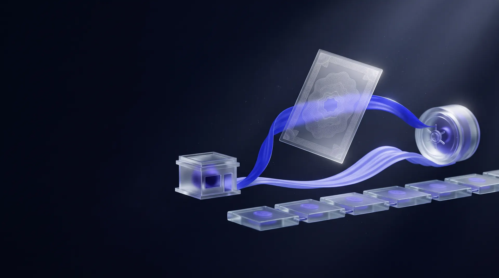
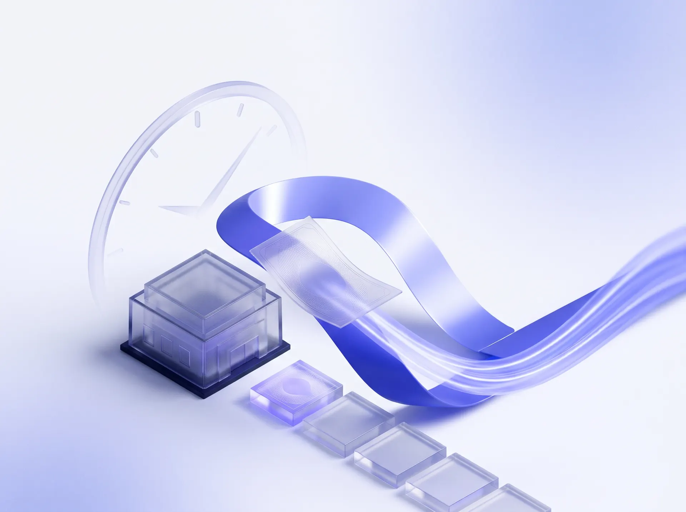
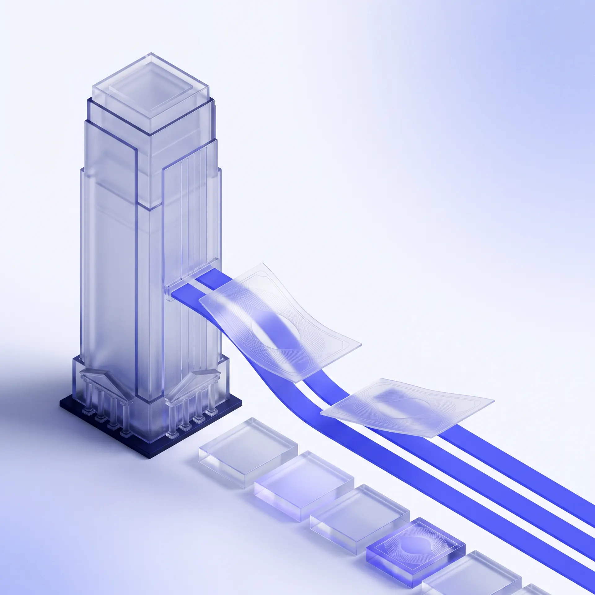
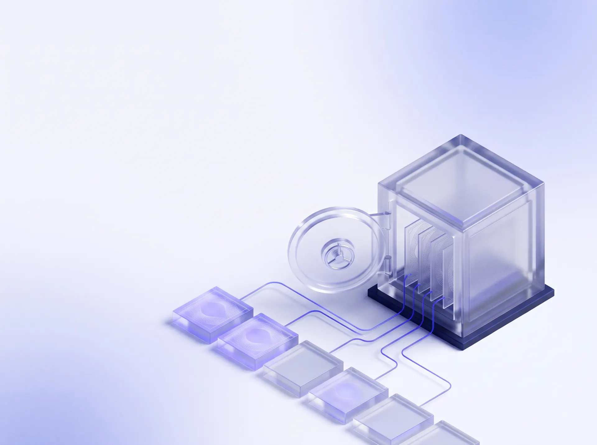
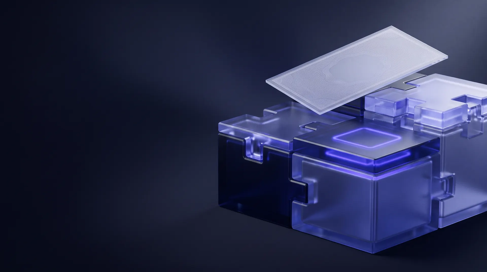

Покупатель подтверждает счёт
Покупатель подтверждает поставщика, сумму и срок оплаты. NEVO сводит всё это в цифровой платёжный вексель (DPN) и выпускает его на поставщика.

Всё начинается со счёта, который покупатель уже подтвердил. Вы можете попросить INORI заплатить вам раньше, а покупатель заплатит в ту дату, о которой вы договорились.
Поставщики часто заканчивают работу за несколько месяцев до того, как им за неё заплатят. Пока не наступит срок оплаты, уже заработанные деньги просто стоят в чужой очереди платежей.
NEVO превращает подтверждённый счёт в цифровой платёжный вексель (DPN). Поставщик может дождаться срока оплаты или попросить INORI заплатить раньше. Если INORI одобряет заявку и поставщика устраивают условия, INORI переводит деньги, а покупатель всё равно платит в изначальную дату.
Платформа NEVOПокупатель подтверждает поставщика, сумму и срок оплаты. NEVO сводит всё это в цифровой платёжный вексель (DPN) и выпускает его на поставщика.

Можно держать DPN до срока оплаты, а можно попросить INORI заплатить раньше. Подтверждённый счёт ещё не означает одобренное финансирование.

INORI рассматривает заявку. Если она одобрена и поставщик принимает условия, INORI платит банковским переводом, проверяет банковское подтверждение, и DPN переходит к INORI.

В изначальную дату покупатель платит тому, кто в этот момент владеет DPN. После сверки платежа DPN получает статус погашенного.

Запрашивайте досрочную оплату по счетам, которые подтвердил покупатель. Вы видите условия до того, как соглашаетесь, и всегда можете просто дождаться срока.
Подробнее
Помогите поставщикам получать деньги раньше, не сдвигая собственную дату оплаты.
Подробнее
Мы рассматриваем каждую заявку, платим одобренным поставщикам банковским переводом и получаем оплату от покупателя в срок.
ПодробнееРаботаем за кулисами и держим в курсе всех участников. Без лишнего шума, с результатом.
Разбираемся в деталях, понимаем регуляторную картину и строим подход, который подходит именно вам.
Берём на себя документы, следим за каждым процессом и добиваемся, чтобы дело двигалось.
Работаем в рамках закона и находим гибкие решения внутри правил.
Помимо NEVO, INORI оказывает финансовые и регуляторные услуги государственным структурам, институтам и бизнесу, от стратегии до практической реализации.
Мы ведём практическую работу с банками и регуляторами и держим в курсе всех участников.
ПодробнееРазбираем сложную ситуацию, вникаем в регулирование и строим план, который подходит именно вам.
Подробнее
Мы не ограничиваемся советами. Готовим документы, следим за каждым процессом и добиваемся, чтобы дело двигалось.
ПодробнееВсё начинается с покупателя. Он подтверждает счёт, поставщик может запросить досрочную оплату, а в срок покупатель платит тому, кто в этот момент владеет обязательством. В NEVO это обязательство и право владения им записываются как DPN.
Нет. Покупатель платит в изначальный срок. Если DPN перешёл к INORI, покупатель просто платит INORI вместо поставщика, на условиях сделки.
Вовсе нет. Поставщик может запросить финансирование или просто дождаться срока. Любое финансирование зависит от соответствия критериям, проверки, одобрения и согласованных условий.
Нет. Подтверждённый счёт и одобренное финансирование не одно и то же. INORI проверяет каждую компанию и каждый счёт, а поставщик видит условия до того, как решить, продолжать ли.
Мы договоримся о коротком бесплатном звонке без обязательств, чтобы понять ваши задачи и предложить следующие шаги.
Да. Каждое обращение рассматривается строго конфиденциально, и мы никому ничего не передаём без вашего явного согласия.

Расскажите, вы поставщик или покупатель, и мы покажем, как NEVO работает для вас.